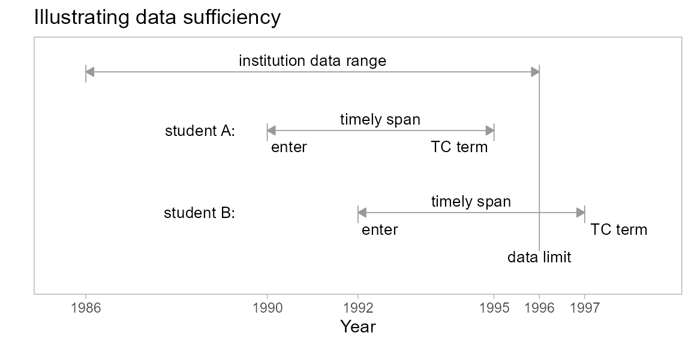

vignettes/art-020-data-sufficiency.Rmd
art-020-data-sufficiency.RmdThe data provided by institutions to MIDFIELD cover a finite span of years, with different starting and ending terms for each institution.
For students admitted too near the upper limit of their institution’s data range, the available data cover an insufficient number of years to fairly assess student performance. Only students for whom the data range is sufficient should be included in any analysis.
In this vignette, we introduce two concepts and their related midfieldr functions:
In the figure we compare two first-time-in-college students admitted in different terms, both with 6-year spans during which program completion would be considered timely.

The TC term for Student B is not within the range of data provided by their institution. By the data sufficiency criterion, we exclude student B from the study.
The criterion applies even if Student B were known to have graduated within the data limit. Other students like Student B will graduate after the data limit, but we cannot know if their program completion was timely or not. Because such students must be excluded from the study, so must every student whose TC term is not encompassed by the available data.
study_program)study_student)midfieldr functions
packages
# packages used
library("midfieldr")
library("midfielddata")
library("data.table")
# optional code to format data.table printing
options(
datatable.print.nrows = 10,
datatable.print.topn = 5,
datatable.print.class = TRUE
)data
# load data tables from midfielddata
data(student, term, degree)Recall that the case study program codes and names are saved in the midfieldr package as the data set study_program. View its help page by running
? study_programView the data frame,
study_program
#> cip6 program
#> <char> <char>
#> 1: 140801 Civil
#> 2: 140802 Civil
#> 3: 140803 Civil
#> 4: 140804 Civil
#> 5: 140805 Civil
#> ---
#> 8: 141003 Electrical
#> 9: 141004 Electrical
#> 10: 141099 Electrical
#> 11: 141901 Mechanical
#> 12: 143501 IndustrialTo obtain the students enrolled in the case study programs, we use filter_match() to access the term table.
case_students <- filter_match(term,
match_to = study_program,
by_col = "cip6",
select = c("mcid", "cip6")
)
case_students
#> mcid cip6
#> <char> <char>
#> 1: MID25783197 140801
#> 2: MID25783197 140801
#> 3: MID25783197 140801
#> 4: MID25783197 140801
#> 5: MID25783197 140801
#> ---
#> 67089: MID26696429 143501
#> 67090: MID26696429 143501
#> 67091: MID26696429 143501
#> 67092: MID26696429 143501
#> 67093: MID26696429 143501Delete duplicate rows, if any,
case_students <- unique(case_students)
case_students
#> mcid cip6
#> <char> <char>
#> 1: MID25783197 140801
#> 2: MID25783441 140801
#> 3: MID25783553 140801
#> 4: MID25783648 140801
#> 5: MID25784209 140801
#> ---
#> 10760: MID26693368 143501
#> 10761: MID26695188 143501
#> 10762: MID26695626 143501
#> 10763: MID26696116 143501
#> 10764: MID26696429 143501A necessary prerequisite for applying the data sufficiency criterion is to determine a timely completion term for every prospective student in a study. To confirm that the pool of students are all degree-seeking, we use filter_match() to match to the IDs in the student table.
# limit population to degree-seeking students
DT <- filter_match(case_students,
match_to = student,
by_col = "mcid"
)
# examine the result
DT <- unique(DT)
DT
#> mcid cip6
#> <char> <char>
#> 1: MID25783178 143501
#> 2: MID25783197 140801
#> 3: MID25783388 141901
#> 4: MID25783441 140801
#> 5: MID25783491 141001
#> ---
#> 10760: MID26696967 141901
#> 10761: MID26696979 141901
#> 10762: MID26697163 141901
#> 10763: MID26697444 141901
#> 10764: MID26697447 141001We use add_timely_term() to estimate the timely completion term. View its help page by running
? add_timely_termAs the function name suggests, add_timely_term() adds the timely_term column to the input data frame. The new variable contains the estimated timely completion term for each student. The first argument is your working data frame to which the column is to be added; the second argument is term (or your equivalent term-variables data frame). Both are required.
# estimate the timely completion term
DT <- add_timely_term(DT, midfield_term = term)
DT
#> mcid cip6 timely_term
#> <char> <char> <char>
#> 1: MID25783178 143501 20003
#> 2: MID25783197 140801 19923
#> 3: MID25783388 141901 19923
#> 4: MID25783441 140801 19973
#> 5: MID25783491 141001 20013
#> ---
#> 10760: MID26696967 141901 20153
#> 10761: MID26696979 141901 20183
#> 10762: MID26697163 141901 20143
#> 10763: MID26697444 141901 20153
#> 10764: MID26697447 141001 20163The basic heuristic starts with span number of years for each student (default 6 years) and adjusts the span by subtracting a whole number of years based on the level at which the student is admitted.
For example, a student admitted at the second-year level is assumed to have completed one year of a program, so their span is reduced by one year. Similarly, spans are reduced by two years for students admitted at the 3rd-year level and by three years for students admitted at the fourth-year level. The adjusted span of years added to their starting term produces timely completion term.
Optional arguments are details, span, and sched_span. When used, these arguments must be named.
add_timely_term(dframe,
midfield_term,
...,
details = NULL, # default FALSE
span = NULL, # default 6 years
sched_span = NULL) # default 4 yearsspan must be no less than sched_span.sched_span is the number of years the institution schedules for program completion, typically 4 years.details, when TRUE, provides additional columns (described next)Setting details to TRUE yields additional columns that were used to determine the timely-term results:
term_i admission termlevel_i level upon being admittedadj_span adjusted spanThe potential use of these data are to implement one’s own heuristic for determining timely completion terms.
# show details
DT <- add_timely_term(DT,
midfield_term = term,
details = TRUE
)
DT
#> mcid cip6 term_i level_i adj_span timely_term
#> <char> <char> <char> <char> <num> <char>
#> 1: MID25783178 143501 19946 01 Freshman 6 20003
#> 2: MID25783197 140801 19871 01 Freshman 6 19923
#> 3: MID25783388 141901 19871 01 Freshman 6 19923
#> 4: MID25783441 140801 19921 01 Freshman 6 19973
#> 5: MID25783491 141001 19961 01 Freshman 6 20013
#> ---
#> 10760: MID26696967 141901 20101 01 Freshman 6 20153
#> 10761: MID26696979 141901 20154 04 Senior 3 20183
#> 10762: MID26697163 141901 20101 02 Sophomore 5 20143
#> 10763: MID26697444 141901 20101 01 Freshman 6 20153
#> 10764: MID26697447 141001 20111 01 Freshman 6 20163If the input data frame has an existing column name matching any of the added column names, the existing columns are deleted. For example, having examined the details, you can delete them (especially useful in an interactive session) by running the same code with details set to FALSE.
# remove details
DT <- add_timely_term(DT,
midfield_term = term,
details = FALSE
)
DT
#> mcid cip6 timely_term
#> <char> <char> <char>
#> 1: MID25783178 143501 20003
#> 2: MID25783197 140801 19923
#> 3: MID25783388 141901 19923
#> 4: MID25783441 140801 19973
#> 5: MID25783491 141001 20013
#> ---
#> 10760: MID26696967 141901 20153
#> 10761: MID26696979 141901 20183
#> 10762: MID26697163 141901 20143
#> 10763: MID26697444 141901 20153
#> 10764: MID26697447 141001 20163If we start with a data frame with details shown
x <- add_timely_term(DT, term, details = TRUE)then the following code chunk,
x[adj_span == 6, .SD[1], by = cip6]subsets x as follows:
adj_span == 6 subsets rows for a 6 year spanby = cip6 groups the data by the four CIP codes.SD[1] retains the first row of each groupwith the resulting 4 rows (one for each CIP):
#> cip6 mcid term_i level_i adj_span timely_term
#> <char> <char> <char> <char> <num> <char>
#> 1: 143501 MID25783178 19946 01 Freshman 6 20003
#> 2: 140801 MID25783197 19871 01 Freshman 6 19923
#> 3: 141901 MID25783388 19871 01 Freshman 6 19923
#> 4: 141001 MID25783491 19961 01 Freshman 6 20013term help page) that all terms of an academic year are encoded with the same YYYY value. Choose any row. Confirm that a student starting in the initial term shown and graduating a full 6 academic years later would graduate in the term reported in the timely-term column.Data sufficiency depends on the range of data from an institution, so our first step is to add a column for institution keyed by the student ID. We use the add_institution(). View its help page by running
? add_institutionThe function has two arguments, the data frame to which the new variable is added and the term MIDFIELD data table (or equivalent). In the event that a student were admitted to more than one institution over their history in the data, the function reports the institution at which the student was enrolled for the greatest number of terms.
# add institutions
DT <- add_institution(DT,
midfield_term = term
)
# examine the result
DT
#> mcid institution cip6 timely_term
#> <char> <char> <char> <char>
#> 1: MID25783178 Institution M 143501 20003
#> 2: MID25783197 Institution M 140801 19923
#> 3: MID25783388 Institution M 141901 19923
#> 4: MID25783441 Institution M 140801 19973
#> 5: MID25783491 Institution M 141001 20013
#> ---
#> 10760: MID26696967 Institution L 141901 20153
#> 10761: MID26696979 Institution L 141901 20183
#> 10762: MID26697163 Institution L 141901 20143
#> 10763: MID26697444 Institution L 141901 20153
#> 10764: MID26697447 Institution L 141001 20163Like the other midfieldr add_ functions, existing columns are deleted or overwritten if they have the same name as the variables to be added (here, institution).
Now that our working data frame has timely_term and institution columns, we can use add_data_sufficiency() to add a logical variable (TRUE/FALSE) that answers the question, “Is the data sufficiency constraint satisfied?” View its help page by running,
? add_data_sufficiencySimilar to add_timely_term(), this function has two required arguments and one optional details argument. The details, in this case, add one extra column to show the institution’s upper data limit.
# add column with details
DT <- add_data_sufficiency(DT,
midfield_term = term,
details = TRUE
)
# examine the result
DT
#> mcid institution cip6 timely_term inst_limit data_sufficiency
#> <char> <char> <char> <char> <char> <lgcl>
#> 1: MID25783178 Institution M 143501 20003 20096 TRUE
#> 2: MID25783197 Institution M 140801 19923 20096 TRUE
#> 3: MID25783388 Institution M 141901 19923 20096 TRUE
#> 4: MID25783441 Institution M 140801 19973 20096 TRUE
#> 5: MID25783491 Institution M 141001 20013 20096 TRUE
#> ---
#> 10760: MID26696967 Institution L 141901 20153 20164 TRUE
#> 10761: MID26696979 Institution L 141901 20183 20164 FALSE
#> 10762: MID26697163 Institution L 141901 20143 20164 TRUE
#> 10763: MID26697444 Institution L 141901 20153 20164 TRUE
#> 10764: MID26697447 Institution L 141001 20163 20164 TRUEWith details FALSE, only the data_sufficieny column is added.
# without details
DT <- add_data_sufficiency(DT,
midfield_term = term,
details = FALSE
)
# examine the result
DT
#> mcid institution cip6 timely_term data_sufficiency
#> <char> <char> <char> <char> <lgcl>
#> 1: MID25783178 Institution M 143501 20003 TRUE
#> 2: MID25783197 Institution M 140801 19923 TRUE
#> 3: MID25783388 Institution M 141901 19923 TRUE
#> 4: MID25783441 Institution M 140801 19973 TRUE
#> 5: MID25783491 Institution M 141001 20013 TRUE
#> ---
#> 10760: MID26696967 Institution L 141901 20153 TRUE
#> 10761: MID26696979 Institution L 141901 20183 FALSE
#> 10762: MID26697163 Institution L 141901 20143 TRUE
#> 10763: MID26697444 Institution L 141901 20153 TRUE
#> 10764: MID26697447 Institution L 141001 20163 TRUEIf we start with the term data table, select two columns, and order its rows by institution and term,
# select columns from term
cols_we_want <- c("institution", "term")
x <- term[order(institution, term), ..cols_we_want]then the following code chunk,
# optional code to format data.table printing
options(datatable.print.nrows = 12)
# filter for last term grouped by instititution
x[, .SD[.N], by = institution]subsets x as follows:
by = institution groups the data by the 12 institutions.SD[.N] retains the last row of each group (having previously ordered the rows by term within each institution)yielding a data frame (not shown) giving the last term in the data for each institution. Obtain the data frame for yourself by running the code chunks above. Then run:
y <- add_data_sufficiency(DT,
midfield_term = term,
details = TRUE
)Filter for one institution using
y[institution == "Institution A", .SD[1:5]]where
institution == "Institution A" filters for Institution A only.SD[1:5] pulls out the first 5 rows,inst_limit reported by add_data_sufficiency().Observations (rows) satisfying the data sufficiency criterion are labeled TRUE in the data_sufficiency column; those that do not are labeled FALSE. Limiting the population to students satisfying the criterion is straightforward—we retain the TRUE data sufficiency rows.
# limit population to data sufficient
DT <- DT[data_sufficiency == TRUE]
# examine the result
DT
#> mcid institution cip6 timely_term data_sufficiency
#> <char> <char> <char> <char> <lgcl>
#> 1: MID25783178 Institution M 143501 20003 TRUE
#> 2: MID25783197 Institution M 140801 19923 TRUE
#> 3: MID25783388 Institution M 141901 19923 TRUE
#> 4: MID25783441 Institution M 140801 19973 TRUE
#> 5: MID25783491 Institution M 141001 20013 TRUE
#> ---
#> 8215: MID26696958 Institution L 141901 20163 TRUE
#> 8216: MID26696967 Institution L 141901 20153 TRUE
#> 8217: MID26697163 Institution L 141901 20143 TRUE
#> 8218: MID26697444 Institution L 141901 20153 TRUE
#> 8219: MID26697447 Institution L 141001 20163 TRUEHaving performed the subset, the working columns we used to get to this point can be deleted. We retain the two columns with which we started this vignette, mcid and cip6.
DT <- DT[, .(mcid, cip6)]Again, we suggest saving intermediate results like these. This data frame of IDs and CIP codes is saved in midfieldr as the data set study_student. View its help page by running
? study_studentView the data frame,
study_student
#> mcid institution cip6 program race sex
#> <char> <char> <char> <char> <char> <char>
#> 1: MID25783197 Institution M 140801 Civil White Male
#> 2: MID25783441 Institution M 140801 Civil White Male
#> 3: MID25783553 Institution M 140801 Civil White Male
#> 4: MID25784209 Institution M 140801 Civil International Male
#> 5: MID25784489 Institution M 140801 Civil Asian Female
#> ---
#> 8215: MID26692926 Institution L 143501 Industrial White Male
#> 8216: MID26693368 Institution L 143501 Industrial White Male
#> 8217: MID26695626 Institution L 143501 Industrial White Male
#> 8218: MID26696116 Institution L 143501 Industrial White Female
#> 8219: MID26696429 Institution L 143501 Industrial White Female
#> timely_term data_sufficiency
#> <char> <lgcl>
#> 1: 19923 TRUE
#> 2: 19973 TRUE
#> 3: 20073 TRUE
#> 4: 20003 TRUE
#> 5: 19943 TRUE
#> ---
#> 8215: 20153 TRUE
#> 8216: 20143 TRUE
#> 8217: 20143 TRUE
#> 8218: 20153 TRUE
#> 8219: 20153 TRUEConfirm the two are the same.
The data sufficiency criterion must be applied whenever a study incorporates program completion (graduation) as part of a metric. Different heuristics might be used to determine the term of timely completion (discussed in a separate vignette), but once the timely term is determined, the sufficiency of the data available immediately determines whether the student remains in the study.
The vignette code chunks are collected below in a single, condensed script.
# packages used
library("midfieldr")
library("midfielddata")
library("data.table")
# load data tables from midfielddata
data(student, term, degree)
# Case study students
case_students <- filter_match(term,
match_to = study_program,
by_col = "cip6",
select = c("mcid", "cip6")
)
case_students <- unique(case_students)
# Estimate the timely completion term
DT <- filter_match(case_students,
match_to = student,
by_col = "mcid"
)
DT <- unique(DT)
DT <- add_timely_term(DT, midfield_term = term)
# Determine data sufficiency
DT <- add_institution(DT, midfield_term = term)
DT <- add_data_sufficiency(DT,
midfield_term = term,
details = TRUE
)
# Subset data for data sufficiency
DT <- DT[data_sufficiency == TRUE]
DT <- DT[, .(mcid, cip6)]